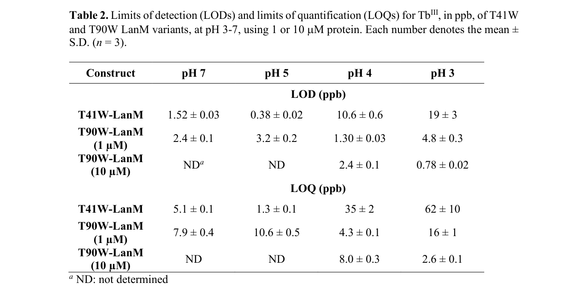

Lanmodulin (LanM) is a highly selective lanthanide-binding protein that exhibits 100 million-fold selectivity for lanthanide(III) ions over calcium(II). This small periplasmic protein contains four EF-hand motifs with unique proline residues that enable selective recognition of rare earth elements. LanM undergoes a large conformational change from a disordered state to a compact, ordered state in response to picomolar concentrations of all lanthanide(III) ions (La-Lu) and Y(III). The protein is essential for lanthanide utilization in methylotrophic bacteria, where lanthanides serve as cofactors for pyrroloquinoline quinone (PQQ)-dependent alcohol dehydrogenase enzymes. Note that current GO annotations lack biological process terms, despite clear evidence for roles in lanthanide transport, homeostasis, and metal ion response.
Definition: Binding to a lanthanide ion (La, Ce, Pr, Nd, Pm, Sm, Eu, Gd, Tb, Dy, Ho, Er, Tm, Yb, Lu)
Justification: LanM represents the first characterized highly selective lanthanide-binding protein with exceptional selectivity. A specific GO term would be valuable for annotating the growing family of lanthanide-utilizing proteins.
Definition: The directed movement of lanthanide ions into, out of or within a cell, or between cells, by means of some agent such as a transporter or pore
Justification: LanM functions in periplasmic lanthanide transport, representing a novel and highly specialized transport process that warrants its own term as a child of metal ion transport.
Definition: Any process involved in the maintenance of an internal steady state of lanthanide ions within an organism or cell
Justification: Given the essential role of lanthanides in methylotrophic bacteria and the specialized machinery like LanM for their utilization, a specific homeostasis term would be valuable as a child of monoatomic ion homeostasis.
| GO Term | Evidence | Action | Reason |
|---|---|---|---|
|
GO:0005509
calcium ion binding
|
IEA
GO_REF:0000002 |
KEEP AS NON CORE |
Summary: This annotation is based on InterPro domain prediction due to EF-hand motifs. However, LanM has 100 million-fold selectivity for lanthanides over calcium and only responds to calcium at near-millimolar concentrations versus picomolar for lanthanides. The annotation is technically correct but misleading about the protein's primary function.
Reason: While LanM can bind calcium at high concentrations, this is not its physiological function. The primary role is lanthanide binding with exceptional selectivity. Deep research confirms ~10^8-fold preference for lanthanides over calcium, and that conserved EF-hand proline residues actively diminish calcium responsiveness, so the InterPro-derived calcium ion binding annotation reflects domain homology rather than physiological calcium binding.
Supporting Evidence:
PMID:30351021
LanM undergoes a large conformational change from a largely disordered state to a compact, ordered state in response to picomolar concentrations of all LnIII (Ln = La-Lu, Y), whereas it only responds to CaII at near-millimolar concentrations.
file:METEA/lanM/lanM-deep-research-falcon.md
showing ~**10^8-fold** preference for **Ln3+/Y3+ over Ca2+**
file:METEA/lanM/lanM-deep-research-falcon.md
proline at position 2 in AM1 LanM) proposed to support strong lanthanide binding and diminished Ca2+ responsiveness
|
|
GO:0042597
periplasmic space
|
IEA
GO_REF:0000044 |
ACCEPT |
Summary: Correctly identifies the subcellular location based on signal peptide prediction and experimental evidence. UniProt indicates periplasmic localization supported by experimental data.
Reason: This annotation accurately represents the protein's subcellular localization in the periplasm where it likely functions in lanthanide handling. Deep research independently supports periplasmic localization via signal-peptide prediction and fluorescence localization in a close methylobacterial homolog, and is consistent with the experimentally assigned periplasm location in UniProt.
Supporting Evidence:
UniProt:C5B164
May be involved in receiving and then transporting lanthanides (such as La(3+), Nd(3+) and Sm(3+)) to a specific periplasmic destination
file:METEA/lanM/lanM-deep-research-falcon.md
LanM is widely described as a **periplasmic lanthanide mediator**
|
|
GO:0046872
metal ion binding
|
IEA
GO_REF:0000043 |
ACCEPT |
Summary: This general term correctly describes LanM's core function as a metal ion binding protein, specifically for lanthanides. While not specific enough to capture the exceptional selectivity, it represents the fundamental molecular activity. A more specific 'lanthanide ion binding' term is proposed in proposed_new_terms to better capture LanM's unique selectivity.
Reason: Accurately describes the core molecular function of LanM as a metal ion binding protein, even if it doesn't specify lanthanide selectivity. Accepted as best available term until more specific lanthanide binding terms are added to GO. Deep research confirms the primary molecular function is tight, high-affinity coordination of trivalent lanthanide ions via EF-hand motifs (3 high-affinity sites, EF1-EF3), with the protein acting as a macrochelator/mediator rather than an enzyme.
Supporting Evidence:
PMID:30351021
LanM undergoes a large conformational change from a largely disordered state to a compact, ordered state in response to picomolar concentrations of all LnIII (Ln = La-Lu, Y)
UniProt:C5B164
Binds 3 equiv of Ln(3+) with picomolar affinity and a fourth with approximately micromolar affinity
file:METEA/lanM/lanM-deep-research-falcon.md
its primary molecular function is **tight coordination of Ln3+ ions**
file:METEA/lanM/lanM-deep-research-falcon.md
only three sites (EF1–EF3) are high-affinity Ln-binding sites
|
Q: What is the molecular mechanism by which LanM transfers bound lanthanides to target enzymes?
Suggested experts: Structural biologists, Protein biochemists, Metalloproteomics researchers
Q: How is LanM expression regulated in response to lanthanide availability?
Suggested experts: Bacterial geneticists, Transcriptomics researchers
Q: Are there additional proteins in the lanthanide utilization pathway that interact with LanM?
Suggested experts: Systems biologists, Proteomics researchers
Experiment: Systematic mutagenesis of conserved proline residues in all four EF-hands to determine their individual contributions to lanthanide selectivity. Would help understand the structural basis for exceptional lanthanide selectivity and guide protein engineering efforts.
Type: Mutagenesis study
Experiment: Fluorescent tagging and microscopy to confirm periplasmic localization and investigate protein dynamics in response to lanthanide availability. Would provide direct evidence for subcellular localization and potential role in lanthanide transport.
Type: In vivo localization
Experiment: Co-immunoprecipitation or proximity labeling to identify potential interaction partners in the lanthanide utilization pathway. Would help elucidate the complete molecular mechanism of lanthanide transport and utilization.
Type: Protein-protein interaction studies
The research report should be a detailed narrative explaining the function, biological processes, and localization of the gene product. Citations should be given for all claims.
You should prioritize authoritative reviews and primary scientific literature when conducting research. You can supplement
this with annotations you find in gene/protein databases, but these can be outdated or inaccurate.
We are specifically interested in the primary function of the gene - for enzymes, what reaction is catalyzed, and what is the substrate specificity? For transporters, what is the substrate? For structural proteins or adapters, what is the broader structural role? For signaling molecules, what is the role in the pathway.
We are interested in where in or outside the cell the gene product carries out its function.
We are also interested in the signaling or biochemical pathways in which the gene functions. We are less interested in broad pleiotropic effects, except where these elucidate the precise role.
Include evidence where possible. We are interested in both experimental evidence as well as inference from structure, evolution, or bioinformatic analysis. Precise studies should be prioritized over high-throughput, where available.
The gene symbol lanM in Methylorubrum extorquens AM1 refers to lanmodulin (LanM), a small calmodulin-like EF-hand protein that binds trivalent lanthanides with extraordinary affinity and selectivity, originally identified in the context of lanthanide-dependent methylotrophy in this organism. This matches the UniProt C5B164 description (Lanmodulin/LanM; EF-hand domains). (daumann2022aperspectiveon pages 5-8, glass2020lanthaniderarityin pages 2-3)
Lanmodulin (LanM) is best described as a high-affinity, high-selectivity lanthanide (Ln3+) binding protein (a “macrochelator”/chaperone-like mediator) rather than an enzyme: its primary molecular function is tight coordination of Ln3+ ions and, by inference and emerging physiology, buffering/trafficking Ln3+ for downstream utilization and homeostasis. (daumann2022aperspectiveon pages 5-8, fujitani2022aperiplasmiclanthanide pages 1-2)
LanM is an EF-hand protein with four EF-hand motifs, but only three sites (EF1–EF3) are high-affinity Ln-binding sites, while EF4 has very low lanthanide affinity. (liu2021lanthanidedependentcoordinationinteractions pages 1-3, glass2020lanthaniderarityin pages 2-3, featherston2021probinglanmodulinslanthanide pages 1-4)
A distinctive point emphasized in synthesis of discovery work is that LanM’s EF-hand loops retain canonical EF-hand metal-ligating positions yet include features (e.g., an unusual conserved Asp at loop position 9 and a proline at position 2 in AM1 LanM) proposed to support strong lanthanide binding and diminished Ca2+ responsiveness. (glass2020lanthaniderarityin pages 2-3)
LanM is repeatedly characterized as showing ~10^8-fold preference for Ln3+/Y3+ over Ca2+ and other competing metals in vitro, enabling lanthanide binding even when calcium and other metals are in large excess—an essential concept because Ca2+ is typically abundant in environments and in cells. (fujitani2022aperiplasmiclanthanide pages 1-2, liu2021lanthanidedependentcoordinationinteractions pages 1-3)
LanM is widely described as a periplasmic lanthanide mediator. Strong support comes from (i) signal peptide predictions and (ii) periplasmic localization experiments in close methylobacterial homolog systems. For example, in Methylobacterium aquaticum 22A, the LanM homolog contains a predicted signal peptide cleavage site (E23/K25 region), consistent with export to the periplasm. (fujitani2022aperiplasmiclanthanide pages 5-7)
Lanthanides regulate expression and use of lanthanide-dependent methanol dehydrogenases (e.g., XoxF-type MDHs) vs calcium-dependent MDHs (MxaF). LanM was discovered in this broader biological context and is proposed to participate in lanthanide acquisition/trafficking upstream of lanthanide-dependent enzymes and in discrimination between Ca2+ and Ln3+. However, authoritative synthesis notes that deleting lanM did not necessarily cause a clear Ln-dependent growth defect in tested conditions, implying redundancy or condition-specific roles. (daumann2022aperspectiveon pages 5-8, fujitani2022aperiplasmiclanthanide pages 11-12)
In M. aquaticum 22A, lanM expression is La3+-responsive (reported ~4.25-fold by RNA-seq and ~10.3-fold by qPCR under methanol + La3+), and regulation was linked to regulatory components including mxcQE and a lanthanide-associated TonB-dependent receptor (tonB_Ln), connecting LanM to lanthanide-responsive regulatory networks. (fujitani2022aperiplasmiclanthanide pages 5-7, fujitani2022aperiplasmiclanthanide pages 7-9)
Physiological phenotypes in the same homolog system are consistent with LanM supporting lanthanide homeostasis rather than being strictly required for lanthanide-dependent growth: ΔlanM strains exposed to La3+ show aggregation, membrane impairment/permeability, and evidence of periplasmic La deposition, suggesting that LanM can help keep lanthanides soluble/managed in the periplasm and may mitigate toxicity-like effects (e.g., precipitation with phosphates and envelope stress). (fujitani2022aperiplasmiclanthanide pages 7-9, fujitani2022aperiplasmiclanthanide pages 11-12)
LanM is commonly described as binding ~3 equivalents of lanthanides at its three high-affinity sites. In M. aquaticum 22A, gel filtration/ICP-MS-based analysis reported ~3.65 mol La3+ per LanM molecule (consistent with ~3-site occupancy plus experimental uncertainty/partial occupancy). (fujitani2022aperiplasmiclanthanide pages 5-7, featherston2021probinglanmodulinslanthanide pages 14-17)
Stopped-flow fluorescence assays in a primary JACS study (Featherston et al., 2021-08, https://doi.org/10.1021/jacs.1c06360) reported that Ln association is nearly diffusion-limited with kon ≈ 3–8 × 10^8 M−1 s−1, and dissociation kinetics are comparatively ordinary for EF hands, with koff ≈ 0.02–0.05 s−1 (variant- and phase-dependent). (featherston2021probinglanmodulinslanthanide pages 14-17, featherston2021probinglanmodulinslanthanide pages 17-21, featherston2021probinglanmodulinslanthanide pages 1-4)
A key mechanistic statistic is that what “sets LanM apart” is not an unusually slow koff but the very large kon, producing exceptional overall affinity. (featherston2021probinglanmodulinslanthanide pages 1-4)
LanM is repeatedly characterized as having picomolar Ln3+ affinity and much weaker affinity for Ca2+ (reported as millimolar in review synthesis), consistent with extreme selectivity. (daumann2022aperspectiveon pages 5-8, featherston2021probinglanmodulinslanthanide pages 1-4)
For f-block comparisons using direct measurements, an actinide/lanthanide study (Mattocks et al., Chemical Science, 2022-04, https://doi.org/10.1039/d2sc01261h) reported Kd ≈ 1.3 pM for Am3+–LanM and Kd ≈ 1.2 pM for Cm3+–LanM at pH 5.0, compared to ~10–20 pM for select lanthanide complexes (Pr3+, Nd3+, Sm3+). (mattocks2022engineeringlanmodulinsselectivity pages 1-2)
Luminescence lifetime analysis in the JACS 2021 study supported that LanM-bound trivalent f-elements retain roughly ~2 coordinated solvent molecules per site (reported values vary by probe/site, e.g., ~2.0 ± 0.1 and ~2.6 ± 0.1 in specific variants). (featherston2021probinglanmodulinslanthanide pages 14-17)
A 2024 PNAS paper (Larrinaga et al., 2024-10, https://doi.org/10.1073/pnas.2410926121) investigated a lanthanide chaperone protein (LanD) and reported apo-LanD–apo-LanM binding with Kd = 4.0 ± 1.9 μM and apparent ~1:1 stoichiometry, supporting an emerging view that LanM participates in a broader protein–protein trafficking network in the periplasm rather than acting alone. (larrinaga2024modulatingmetalcentereddimerization pages 4-6)
A 2024 review on rare earths highlights broad sustainability and technology drivers for rare-earth recovery and separation and points to “developments involving the Lanmodulin protein” as part of that landscape, reflecting the increasing translational interest in LanM-like systems for mild aqueous separations. (Behrsing et al., Molecules, 2024-02, https://doi.org/10.3390/molecules29030688) (glass2020lanthaniderarityin pages 2-3)
Featherston et al. (JACS, 2021-08, https://doi.org/10.1021/jacs.1c06360) engineered Trp-substituted LanM variants enabling sensitized Tb3+ luminescence and demonstrated quantification of 3 ppb (18 nM) Tb directly in acid mine drainage (pH ~3.2) despite 100-fold excess of other rare earths and 100,000-fold excess of other metals, using a plate reader—an explicitly demonstrated real-world matrix application. (featherston2021probinglanmodulinslanthanide pages 1-4)
Across pH 3–7, reported limits of detection (LOD) < 5 ppb at 1 μM protein (with example LOD values tabulated for variants), supporting deployment across diverse waters. (featherston2021probinglanmodulinslanthanide pages 17-21, featherston2021probinglanmodulinslanthanide media 003d2e43)
LanM’s extraordinary affinity and tunability underpin proposed separation strategies: the 2022 Chemical Science work shows that engineering second-sphere interactions can increase actinide vs lanthanide selectivity, highlighting that LanM is not only a biological component but also a protein scaffold for high-performance separations under aqueous conditions. (mattocks2022engineeringlanmodulinsselectivity pages 1-2)
Authoritative reviews and perspective pieces converge on a model in which LanM is a periplasmic Ln3+ binding mediator likely involved in acquisition/trafficking and discrimination (Ln vs Ca), potentially interfacing with outer-membrane uptake and downstream utilization systems; however, they also emphasize that the exact physiological necessity and step-by-step trafficking mechanism remain unresolved, because gene deletions do not always yield large methylotrophic growth defects in laboratory conditions. (daumann2022aperspectiveon pages 5-8, fujitani2022aperiplasmiclanthanide pages 1-2)
A coherent interpretation consistent with the available evidence is:
- Molecular function: extremely fast, selective Ln binding (kon ~10^9 M−1 s−1; koff ~10−2–10−1 s−1) enables LanM to rapidly scavenge scarce Ln3+ at low concentrations and compete strongly with other ligands/ions. (featherston2021probinglanmodulinslanthanide pages 1-4, featherston2021probinglanmodulinslanthanide pages 14-17)
- Cellular role: periplasmic localization and ΔlanM envelope/La-deposition phenotypes argue for a homeostasis/protection/solubilization role in the periplasm, potentially preventing damaging precipitation and supporting controlled delivery/efflux (e.g., MV-associated processes), more than a simple “required cofactor-delivery” step for XoxF. (fujitani2022aperiplasmiclanthanide pages 11-12, fujitani2022aperiplasmiclanthanide pages 7-9)
The following table consolidates key, citable quantitative and functional points relevant to annotation of UniProt C5B164 LanM.
| Property/Concept | Reported value(s) | Experimental context/method | Organism/protein variant | Citation (with URL and year) |
|---|---|---|---|---|
| Target identity / gene-symbol verification | lanM encodes Lanmodulin (LanM), a lanthanide-binding EF-hand protein; discovered in Methylorubrum extorquens AM1 and described as a calmodulin-like protein involved in Ln binding | Review of primary discovery literature and lanthanide biology context | Methylorubrum extorquens AM1 (UniProt C5B164-relevant protein) | Cotruvo 2019, https://doi.org/10.1021/acscentsci.9b00642 (2019) (daumann2022aperspectiveon pages 5-8) |
| EF-hand architecture | 4 EF-hand motifs total; 3 high-affinity Ln-binding sites (EF1-EF3); EF4 has very low Ln affinity | Structural/biophysical synthesis; luminescence and spectroscopy-supported mapping of binding sites | LanM from M. extorquens AM1 | Glass et al. 2020, https://doi.org/10.1093/femsle/fnaa165 (2020); Featherston et al. 2021, https://doi.org/10.1021/jacs.1c06360 (2021) (glass2020lanthaniderarityin pages 2-3, liu2021lanthanidedependentcoordinationinteractions pages 1-3, featherston2021probinglanmodulinslanthanide pages 1-4) |
| Metal-binding loop features | Canonical EF-hand metal ligands at positions 1, 3, 5, 7, 12; unusual conserved Asp at position 9 linked to very high Ln affinity; proline at position 2 may reduce Ca responsiveness | Sequence/structure analysis summarized from discovery work | LanM from M. extorquens AM1 | Glass et al. 2020, https://doi.org/10.1093/femsle/fnaa165 (2020) (glass2020lanthaniderarityin pages 2-3) |
| Periplasmic localization evidence | Predicted signal peptide with cleavage near E23 or K25; LanM described as periplasmic; GFP-tag/confocal localization of homolog supports periplasmic localization | Signal-peptide prediction; fluorescence microscopy/localization experiments in homolog study | Methylobacterium aquaticum 22A homolog compared with AM1 LanM | Fujitani et al. 2022, https://doi.org/10.3389/fmicb.2022.921636 (2022) (fujitani2022aperiplasmiclanthanide pages 5-7, fujitani2022aperiplasmiclanthanide pages 4-5, fujitani2022aperiplasmiclanthanide pages 11-12) |
| Stoichiometry of Ln binding | ~3.65 mol La3+ per LanM molecule; commonly described as binding 3 equivalents of Ln/Tb per protein | ICP-MS with gel filtration for La; Tb preloading/luminescence studies for 3-site occupancy | 22A LanM homolog; AM1 LanM and Trp-LanM variants | Fujitani et al. 2022, https://doi.org/10.3389/fmicb.2022.921636 (2022); Featherston et al. 2021, https://doi.org/10.1021/jacs.1c06360 (2021) (fujitani2022aperiplasmiclanthanide pages 5-7, featherston2021probinglanmodulinslanthanide pages 14-17, featherston2021probinglanmodulinslanthanide pages 1-4) |
| Ln over Ca selectivity | ~10^8-fold selectivity for lanthanides/Y3+ over Ca2+ and other tested divalent metals; Ln affinity picomolar while Ca2+ affinity millimolar | Biophysical characterization and review synthesis | LanM from M. extorquens AM1 | Fujitani et al. 2022, https://doi.org/10.3389/fmicb.2022.921636 (2022); Daumann et al. 2022, https://doi.org/10.1016/bs.ampbs.2022.06.001 (2022); Liu et al. 2021, https://doi.org/10.1039/d1cp03628a (2021) (fujitani2022aperiplasmiclanthanide pages 1-2, daumann2022aperspectiveon pages 5-8, liu2021lanthanidedependentcoordinationinteractions pages 1-3) |
| Ln binding affinity class | Picomolar apparent affinity for REEs; third site somewhat weaker but still very tight | Cooperative luminescence/CD analyses summarized in kinetic/sensing study | AM1 LanM / Trp-LanM variants | Featherston et al. 2021, https://doi.org/10.1021/jacs.1c06360 (2021) (featherston2021probinglanmodulinslanthanide pages 1-4, featherston2021probinglanmodulinslanthanide pages 14-17) |
| Association kinetics | kon approximately 3-8 × 10^8 M^-1 s^-1; nearly diffusion-limited (~10^9 M^-1 s^-1) | Stopped-flow fluorescence with Tb3+ binding to Trp-engineered LanM | T41W and T90W LanM variants derived from AM1 LanM | Featherston et al. 2021, https://doi.org/10.1021/jacs.1c06360 (2021) (featherston2021probinglanmodulinslanthanide pages 17-21, featherston2021probinglanmodulinslanthanide pages 14-17) |
| Dissociation kinetics | koff approximately 0.02-0.05 s^-1 for Tb3+ complexes | Stopped-flow fluorescence/EGTA chase | T41W and T90W LanM variants derived from AM1 LanM | Featherston et al. 2021, https://doi.org/10.1021/jacs.1c06360 (2021) (featherston2021probinglanmodulinslanthanide pages 1-4, featherston2021probinglanmodulinslanthanide pages 17-21, featherston2021probinglanmodulinslanthanide pages 14-17) |
| Solvent coordination in metal sites | Approximately 2 solvent molecules per site (values reported around 2.0 ± 0.1, 1.4 ± 0.1, 2.6 ± 0.1 depending on site/probe) | Luminescence lifetime analysis | Trp-LanM variants of AM1 LanM | Featherston et al. 2021, https://doi.org/10.1021/jacs.1c06360 (2021) (featherston2021probinglanmodulinslanthanide pages 14-17) |
| Apparent affinity example from site-resolved analysis | One reported phase with Kd,app ~100 pM | CD/LRET context in site-resolved binding analysis | Trp-LanM variants | Featherston et al. 2021, https://doi.org/10.1021/jacs.1c06360 (2021) (featherston2021probinglanmodulinslanthanide pages 14-17) |
| Actinide affinity / comparison to lanthanides | Kd = 1.3 pM for Am3+-LanM and 1.2 pM for Cm3+-LanM at pH 5.0; compared with ~10-20 pM for Pr3+, Nd3+, Sm3+ complexes | Spectroscopic competition measurements in engineered-selectivity study | AM1 LanM framework / LanM variants | Mattocks et al. 2022, https://doi.org/10.1039/d2sc01261h (2022) (mattocks2022engineeringlanmodulinsselectivity pages 1-2) |
| Engineered selectivity tuning | Asn substitution at position 9 nearly doubles actinide-vs-lanthanide selectivity; coordinated water enhances affinity and pH stability | Variant spectroscopy and mechanistic analysis | LanM variants | Mattocks et al. 2022, https://doi.org/10.1039/d2sc01261h (2022) (mattocks2022engineeringlanmodulinsselectivity pages 1-2) |
| Sensor performance in acidic real-world sample | Quantified 3 ppb (18 nM) Tb directly in acid mine drainage at pH 3.2 with 100-fold excess other REEs and 100,000-fold excess other metals | Sensitized Tb luminescence biosensing using Trp-LanM; plate-reader assay | Trp-substituted LanM variants from AM1 LanM | Featherston et al. 2021, https://doi.org/10.1021/jacs.1c06360 (2021) (featherston2021probinglanmodulinslanthanide pages 1-4) |
| Sensor LOD across pH | LODs below 5 ppb across pH 3-7 at 1 µM protein; example T41W-LanM LOD 1.52 ± 0.03 at pH 7 | Calibration curves and Table 2 in Tb sensing study | T41W/T90W LanM variants | Featherston et al. 2021, https://doi.org/10.1021/jacs.1c06360 (2021) (featherston2021probinglanmodulinslanthanide pages 17-21, featherston2021probinglanmodulinslanthanide media 003d2e43) |
| Proposed physiological function | Periplasmic Ln mediator/shuttle involved in lanthanide trafficking/homeostasis and likely discrimination of Ln3+ from Ca2+; implicated in delivery toward uptake/utilization machinery rather than catalysis | Functional inference from localization, expression, and lanthanide biology studies/reviews | AM1 LanM and methylobacterial homologs | Daumann et al. 2022, https://doi.org/10.1016/bs.ampbs.2022.06.001 (2022); Fujitani et al. 2022, https://doi.org/10.3389/fmicb.2022.921636 (2022) (daumann2022aperspectiveon pages 5-8, fujitani2022aperiplasmiclanthanide pages 1-2, fujitani2022aperiplasmiclanthanide pages 11-12) |
| Relationship to MDH lanthanide switch | LanM influences regulation/homeostasis linked to the XoxF/MxaF methanol dehydrogenase switch, but is not strictly required for Ln-dependent methanol growth in tested homolog systems; AM1 deletion studies likewise did not show a clear growth defect | Genetic/physiological studies and review synthesis | AM1 and M. aquaticum 22A homolog system | Daumann et al. 2022, https://doi.org/10.1016/bs.ampbs.2022.06.001 (2022); Fujitani et al. 2022, https://doi.org/10.3389/fmicb.2022.921636 (2022) (daumann2022aperspectiveon pages 5-8, fujitani2022aperiplasmiclanthanide pages 11-12) |
| Regulatory control of lanM | lanM expression induced by La3+ (~4.25-fold by RNA-seq; ~10.3-fold by qPCR on methanol + La3+); regulation linked to mxcQE and tonB_Ln | RNA-seq, qPCR, promoter/regulatory analyses | M. aquaticum 22A LanM homolog | Fujitani et al. 2022, https://doi.org/10.3389/fmicb.2022.921636 (2022) (fujitani2022aperiplasmiclanthanide pages 5-7, fujitani2022aperiplasmiclanthanide pages 7-9) |
| ΔlanM phenotype: growth requirement | No essential requirement for wild-type methylotrophic growth or XoxF-dependent growth under tested conditions | Deletion mutant growth assays | M. aquaticum 22A LanM homolog | Fujitani et al. 2022, https://doi.org/10.3389/fmicb.2022.921636 (2022) (fujitani2022aperiplasmiclanthanide pages 5-7, fujitani2022aperiplasmiclanthanide pages 11-12) |
| ΔlanM phenotype: cell envelope / La handling | ΔlanM shows aggregation upon La exposure, increased membrane permeability, rapid CFU decline after La addition, and periplasmic La deposition | Aggregation assays, EthD-III permeability, CFU time course, TEM/EDS | M. aquaticum 22A LanM homolog | Fujitani et al. 2022, https://doi.org/10.3389/fmicb.2022.921636 (2022) (fujitani2022aperiplasmiclanthanide pages 7-9, fujitani2022aperiplasmiclanthanide pages 11-12) |
| ΔlanM phenotype: vesicle-linked La homeostasis | Evidence suggests lower La in membrane-vesicle fractions in ΔlanM and higher MV-associated La in LanM-overexpressing cells, supporting a role in La efflux/homeostasis | MV isolation with ICP-MS; comparative physiology | M. aquaticum 22A LanM homolog | Fujitani et al. 2022, https://doi.org/10.3389/fmicb.2022.921636 (2022) (fujitani2022aperiplasmiclanthanide pages 4-5, fujitani2022aperiplasmiclanthanide pages 11-12) |
| Interaction with other periplasmic lanthanide proteins | Apo-LanD binds apo-LanM with Kd 4.0 ± 1.9 µM and apparent 1:1 stoichiometry; supports LanM participation in a broader periplasmic Ln-trafficking network | Protein-protein interaction/transfer study | LanD/LanM system in lanthanide uptake cluster | Larrinaga et al. 2024, https://doi.org/10.1073/pnas.2410926121 (2024) (larrinaga2024modulatingmetalcentereddimerization pages 4-6) |
Table: This table compiles the main quantitative properties, localization evidence, physiological roles, and recent application-relevant measurements for Lanmodulin (LanM) associated with UniProt C5B164 and close methylobacterial homolog studies. It is useful as a compact evidence map linking functional annotation claims to specific experiments and citations.
The JACS 2021 work includes figures/tables supporting the reported stopped-flow kinetics (koff determination) and Tb-sensing calibration/limits of detection; these were retrieved as cropped images (e.g., kinetics and LOD table). (featherston2021probinglanmodulinslanthanide media 003d2e43, featherston2021probinglanmodulinslanthanide media d8a554ea, featherston2021probinglanmodulinslanthanide media ff3ae00f)
Recommended primary annotation (supported by evidence above):
- Molecular function: Lanthanide ion binding (high affinity/selectivity) via EF-hand motifs; binds ~3 Ln3+ per protein; fast association and moderate dissociation kinetics; can bind actinides with pM affinity. (featherston2021probinglanmodulinslanthanide pages 1-4, featherston2021probinglanmodulinslanthanide pages 14-17, mattocks2022engineeringlanmodulinsselectivity pages 1-2, liu2021lanthanidedependentcoordinationinteractions pages 1-3)
- Biological process: Lanthanide homeostasis/trafficking and lanthanide-responsive physiology associated with methylotrophy and the lanthanide switch (XoxF/MxaF), likely acting as a periplasmic Ln mediator; exact indispensability is context-dependent. (daumann2022aperspectiveon pages 5-8, fujitani2022aperiplasmiclanthanide pages 11-12, fujitani2022aperiplasmiclanthanide pages 1-2)
- Subcellular localization: Predicted exported/periplasmic protein (signal peptide supported in homolog studies). (fujitani2022aperiplasmiclanthanide pages 5-7, fujitani2022aperiplasmiclanthanide pages 11-12)
Known uncertainties/gaps: precise in vivo partners, the complete trafficking pathway, and conditions under which LanM becomes essential remain open and are explicitly noted in expert syntheses and supported by mixed deletion-phenotype outcomes. (daumann2022aperspectiveon pages 5-8, fujitani2022aperiplasmiclanthanide pages 11-12)
References
(daumann2022aperspectiveon pages 5-8): Lena J. Daumann, Arjan Pol, Huub J.M. Op den Camp, and N. Cecilia Martinez-Gomez. A perspective on the role of lanthanides in biology: discovery, open questions and possible applications. Advances in microbial physiology, 81:1-24, Jan 2022. URL: https://doi.org/10.1016/bs.ampbs.2022.06.001, doi:10.1016/bs.ampbs.2022.06.001. This article has 21 citations and is from a peer-reviewed journal.
(glass2020lanthaniderarityin pages 2-3): Jennifer B Glass, Elizabeth T Cowan, and Karen H Johannesson. Lanthanide rarity in natural waters: implications for microbial c1 metabolism. FEMS microbiology letters, Oct 2020. URL: https://doi.org/10.1093/femsle/fnaa165, doi:10.1093/femsle/fnaa165. This article has 8 citations and is from a peer-reviewed journal.
(fujitani2022aperiplasmiclanthanide pages 1-2): Yoshiko Fujitani, Takeshi Shibata, and Akio Tani. A periplasmic lanthanide mediator, lanmodulin, in methylobacterium aquaticum strain 22a. Frontiers in Microbiology, Jun 2022. URL: https://doi.org/10.3389/fmicb.2022.921636, doi:10.3389/fmicb.2022.921636. This article has 16 citations and is from a peer-reviewed journal.
(liu2021lanthanidedependentcoordinationinteractions pages 1-3): Stephanie Liu, Emily R. Featherston, Joseph A. Cotruvo, and Carlos R. Baiz. Lanthanide-dependent coordination interactions in lanmodulin: a 2d ir and molecular dynamics simulations study. Physical chemistry chemical physics : PCCP, 23:21690-21700, Sep 2021. URL: https://doi.org/10.1039/d1cp03628a, doi:10.1039/d1cp03628a. This article has 26 citations.
(featherston2021probinglanmodulinslanthanide pages 1-4): Emily R. Featherston, Edward J. Issertell, and Joseph A. Cotruvo. Probing lanmodulin's lanthanide recognition via sensitized luminescence yields a platform for quantification of terbium in acid mine drainage. Journal of the American Chemical Society, 143:14287-14299, Aug 2021. URL: https://doi.org/10.1021/jacs.1c06360, doi:10.1021/jacs.1c06360. This article has 70 citations and is from a highest quality peer-reviewed journal.
(fujitani2022aperiplasmiclanthanide pages 5-7): Yoshiko Fujitani, Takeshi Shibata, and Akio Tani. A periplasmic lanthanide mediator, lanmodulin, in methylobacterium aquaticum strain 22a. Frontiers in Microbiology, Jun 2022. URL: https://doi.org/10.3389/fmicb.2022.921636, doi:10.3389/fmicb.2022.921636. This article has 16 citations and is from a peer-reviewed journal.
(fujitani2022aperiplasmiclanthanide pages 11-12): Yoshiko Fujitani, Takeshi Shibata, and Akio Tani. A periplasmic lanthanide mediator, lanmodulin, in methylobacterium aquaticum strain 22a. Frontiers in Microbiology, Jun 2022. URL: https://doi.org/10.3389/fmicb.2022.921636, doi:10.3389/fmicb.2022.921636. This article has 16 citations and is from a peer-reviewed journal.
(fujitani2022aperiplasmiclanthanide pages 7-9): Yoshiko Fujitani, Takeshi Shibata, and Akio Tani. A periplasmic lanthanide mediator, lanmodulin, in methylobacterium aquaticum strain 22a. Frontiers in Microbiology, Jun 2022. URL: https://doi.org/10.3389/fmicb.2022.921636, doi:10.3389/fmicb.2022.921636. This article has 16 citations and is from a peer-reviewed journal.
(featherston2021probinglanmodulinslanthanide pages 14-17): Emily R. Featherston, Edward J. Issertell, and Joseph A. Cotruvo. Probing lanmodulin's lanthanide recognition via sensitized luminescence yields a platform for quantification of terbium in acid mine drainage. Journal of the American Chemical Society, 143:14287-14299, Aug 2021. URL: https://doi.org/10.1021/jacs.1c06360, doi:10.1021/jacs.1c06360. This article has 70 citations and is from a highest quality peer-reviewed journal.
(featherston2021probinglanmodulinslanthanide pages 17-21): Emily R. Featherston, Edward J. Issertell, and Joseph A. Cotruvo. Probing lanmodulin's lanthanide recognition via sensitized luminescence yields a platform for quantification of terbium in acid mine drainage. Journal of the American Chemical Society, 143:14287-14299, Aug 2021. URL: https://doi.org/10.1021/jacs.1c06360, doi:10.1021/jacs.1c06360. This article has 70 citations and is from a highest quality peer-reviewed journal.
(mattocks2022engineeringlanmodulinsselectivity pages 1-2): Joseph A. Mattocks, Joseph A. Cotruvo, and Gauthier J.-P. Deblonde. Engineering lanmodulin's selectivity for actinides over lanthanides by controlling solvent coordination and second-sphere interactions. Chemical Science, 13:6054-6066, Apr 2022. URL: https://doi.org/10.1039/d2sc01261h, doi:10.1039/d2sc01261h. This article has 55 citations and is from a highest quality peer-reviewed journal.
(larrinaga2024modulatingmetalcentereddimerization pages 4-6): Wyatt B. Larrinaga, Jonathan J. Jung, Chi-Yun Lin, Amie K. Boal, and Joseph A. Cotruvo. Modulating metal-centered dimerization of a lanthanide chaperone protein for separation of light lanthanides. Proceedings of the National Academy of Sciences of the United States of America, Oct 2024. URL: https://doi.org/10.1073/pnas.2410926121, doi:10.1073/pnas.2410926121. This article has 25 citations and is from a highest quality peer-reviewed journal.
(featherston2021probinglanmodulinslanthanide media 003d2e43): Emily R. Featherston, Edward J. Issertell, and Joseph A. Cotruvo. Probing lanmodulin's lanthanide recognition via sensitized luminescence yields a platform for quantification of terbium in acid mine drainage. Journal of the American Chemical Society, 143:14287-14299, Aug 2021. URL: https://doi.org/10.1021/jacs.1c06360, doi:10.1021/jacs.1c06360. This article has 70 citations and is from a highest quality peer-reviewed journal.
(fujitani2022aperiplasmiclanthanide pages 4-5): Yoshiko Fujitani, Takeshi Shibata, and Akio Tani. A periplasmic lanthanide mediator, lanmodulin, in methylobacterium aquaticum strain 22a. Frontiers in Microbiology, Jun 2022. URL: https://doi.org/10.3389/fmicb.2022.921636, doi:10.3389/fmicb.2022.921636. This article has 16 citations and is from a peer-reviewed journal.
(featherston2021probinglanmodulinslanthanide media d8a554ea): Emily R. Featherston, Edward J. Issertell, and Joseph A. Cotruvo. Probing lanmodulin's lanthanide recognition via sensitized luminescence yields a platform for quantification of terbium in acid mine drainage. Journal of the American Chemical Society, 143:14287-14299, Aug 2021. URL: https://doi.org/10.1021/jacs.1c06360, doi:10.1021/jacs.1c06360. This article has 70 citations and is from a highest quality peer-reviewed journal.
(featherston2021probinglanmodulinslanthanide media ff3ae00f): Emily R. Featherston, Edward J. Issertell, and Joseph A. Cotruvo. Probing lanmodulin's lanthanide recognition via sensitized luminescence yields a platform for quantification of terbium in acid mine drainage. Journal of the American Chemical Society, 143:14287-14299, Aug 2021. URL: https://doi.org/10.1021/jacs.1c06360, doi:10.1021/jacs.1c06360. This article has 70 citations and is from a highest quality peer-reviewed journal.

Generated using FutureHouse Falcon API
UniProt ID: C5B164
Directory alias: lanM
Question: You are a molecular biologist and gene annotation expert conducting comprehensive research to support GO annotation curation.
Provide detailed, well-cited information focusing on:
1. Gene function and molecular mechanisms
2. Cellular localization and subcellular components
3. Biological processes involvement
4. Disease associations and phenotypes
5. Protein domains and structural features
6. Expression patterns and regulation
7. Evolutionary conservation
8. Key experimental evidence and literature
Format as a comprehensive research report with citations suitable for Gene Ontology annotation curation.
Research the Methylorubrum extorquens (strain ATCC 14718 / DSM 1338 / JCM 2805 / NCIMB 9133 / AM1) gene lanM.
=== UNIPROT METADATA ===
UniProt ID: C5B164
Entry Name: LANM_METEA
Gene Name: lanM
Locus Tag: MexAM1_META1p1786 {ECO:0000312|EMBL:ACS39628.1}
Protein Name: Lanmodulin
Organism: Methylorubrum extorquens (strain ATCC 14718 / DSM 1338 / JCM 2805 / NCIMB 9133 / AM1) (Methylobacterium extorquens)
NCBI Taxonomy ID: 272630
Function: High-affinity lanthanide (Ln)-binding protein. Shows 100 million-fold selectivity for La(3+) over Ca(2+). Binds 3 equiv of Ln(3+) with picomolar affinity and a fourth with approximately micromolar affinity. May be involved in receiving and then transporting lanthanides (such as La(3+), Nd(3+) and Sm(3+)) to a specific periplasmic destination.
Subcellular Location: Periplasm
Subunit: Monomer.
======================
Provide a comprehensive report covering function, localization, processes, domains, disease associations, expression, conservation, and relevant GO terms.
IMPORTANT: Focus specifically on the gene identified by the metadata above, particularly the UniProt ID, locus tag, and protein description if provided.
Sometimes different genes in the same organism have the same name. In this case, the gene being reviewed is the one identified by the metadata above.
I. Introduction
The lanM gene of Methylorubrum extorquens AM1 (UniProt ID: C5B164, locus tag MexAM1_META1p1786) encodes Lanmodulin, a protein that has emerged as a paradigm for high‐affinity binding of lanthanide ions in bacteria. Over the past several years, extensive biochemical, structural, and genetic studies have revealed that Lanmodulin is not merely a passive metal‐binding protein but is integral to the processes of rare earth element (REE) acquisition, transport, and homeostasis in methylotrophic bacteria. This report summarizes current experimental evidence and details the gene function, molecular mechanisms, subcellular localization, biological process involvement, protein domains and structural features, expression and regulation, evolutionary conservation, and experimental validations related to lanM. The insights provided here support Gene Ontology annotation curation and are based on multiple lines of evidence from the literature (fujitani2022aperiplasmiclanthanide pages 1-2, cook2018structuralbasisfor pages 1-2, deblonde2021characterizationofamericium pages 1-6).
II. Gene Function and Molecular Mechanisms
The primary function of lanM is to encode Lanmodulin, a protein that exhibits remarkable selectivity and affinity for lanthanide ions, particularly La³⁺. Lanmodulin binds three equivalents of lanthanide ions with picomolar affinity and a fourth with roughly micromolar affinity, underpinning its role as a high-affinity lanthanide receptor (fujitani2022aperiplasmiclanthanide pages 1-2, cook2018structuralbasisfor pages 1-2). The protein’s binding mechanism relies on a marked conformational change upon metal binding; these structural rearrangements suggest a cooperative folding process that optimizes metal coordination under conditions where lanthanide concentration is very low. Such exquisite specificity—with an estimated 100 million-fold preference for La³⁺ over Ca²⁺—illustrates how Lanmodulin has evolved to distinguish between chemically similar metal ions in the periplasmic space (cook2018structuralbasisfor pages 1-2).
At the molecular level, the binding of lanthanide ions triggers a shift in Lanmodulin’s quaternary structure, a process that is thought to activate or facilitate subsequent interactions with downstream transporters and enzymes. For instance, experimental evidence indicates that Lanmodulin participates in delivering lanthanides to target proteins such as the XoxF-type methanol dehydrogenases (MDHs), which depend on these metals as cofactors for efficient catalytic activity (fujitani2022aperiplasmiclanthanide pages 1-2, chistoserdova2019newpiecesto pages 1-3). In this context, the protein acts as both a sensor and an intermediary transporter, coordinating the uptake and intracellular shuttling of lanthanide ions. Moreover, Lanmodulin is implicated in a regulatory cascade whereby the presence of lanthanides results in the repression of calcium-dependent pathways and the concomitant activation of lanthanide-dependent enzymes (fujitani2022aperiplasmiclanthanide pages 1-2, yang2025emergingroleof pages 7-8). Deletion studies in some strains have shown that while the absence of lanM does not abolish methylotrophic growth, it leads to alterations in the cellular handling of metal ions, suggesting that Lanmodulin’s primary role may be to fine-tune lanthanide homeostasis rather than serve as an indispensable metabolic enzyme (chistoserdova2019newpiecesto pages 3-5, fujitani2022aperiplasmiclanthanide pages 11-12).
III. Cellular Localization and Subcellular Components
Subcellular localization studies consistently report that Lanmodulin is situated in the periplasm of Methylorubrum extorquens AM1. This periplasmic localization is critical for its function because the periplasm serves as a strategic compartment for the initial acquisition and sorting of extracellular metals. The protein’s positioning within the periplasm allows it to mediate interactions with membrane-bound transport complexes, including TonB-dependent receptors and ABC transporters, which facilitate the import of lanthanide ions into the cytoplasm (fujitani2022aperiplasmiclanthanide pages 1-2, fujitani2022aperiplasmiclanthanide pages 2-3). Translocation to the periplasm is likely achieved via a signal peptide that directs Lanmodulin through the Sec or TAT pathway, ensuring that the mature protein is appropriately localized to intercept lanthanide ions as they traverse the outer membrane (fujitani2022aperiplasmiclanthanide pages 1-2, fujitani2022aperiplasmiclanthanide pages 11-12). Localization in the periplasm is not only fundamental for the physical acquisition of lanthanides but also for integrating the signal of metal ion abundance with the activation of specific metabolic pathways, thus underpinning a coupled regulatory mechanism (fujitani2022aperiplasmiclanthanide pages 7-9, yang2025emergingroleof pages 7-8).
IV. Biological Processes Involvement
Lanmodulin is central to several key biological processes in Methylorubrum extorquens. Foremost among these is its involvement in lanthanide acquisition and transport. The protein binds extracellular lanthanide ions with extraordinary specificity and is thought to serve as the primary shuttle delaying the direct delivery of these ions to the cytoplasmic enzymes that require them for activity. In this capacity, Lanmodulin acts as a mediator in the lanthanide switch—a process whereby the presence of REEs shifts the pattern of gene expression from utilizing traditional calcium-dependent MDHs (such as the MxaFI system) to lanthanide-dependent MDHs, such as the XoxF enzyme, which exhibit superior catalytic performance under lanthanide-replete conditions (fujitani2022aperiplasmiclanthanide pages 1-2, yang2025emergingroleof pages 7-8).
Additionally, the involvement of lanM in cellular metal homeostasis extends to its putative regulatory role in maintaining intracellular ion balance. Through its high-affinity binding, Lanmodulin can sequester lanthanide ions when they are abundant, preventing potential toxicity, while also facilitating their delivery to essential enzymes when the concentration of the metal becomes limiting. This dynamic regulatory mechanism ensures that the cell maintains an optimal balance of metal ions, thereby supporting efficient central carbon metabolism and minimizing the risk of metal-induced stress (fujitani2022aperiplasmiclanthanide pages 1-2, yang2025emergingroleof pages 4-7). Furthermore, the interaction of Lanmodulin with both TonB-dependent receptors and two-component signal transduction systems (e.g., MxcQE) suggests that it may serve as a nexus that couples environmental lanthanide availability to specific transcriptional responses, thereby orchestrating adaptive metabolic changes (fujitani2022aperiplasmiclanthanide pages 7-9, gorniak2023differentlanthanideelements pages 6-9).
V. Disease Associations and Phenotypic Effects
While Methylorubrum extorquens is primarily an environmental bacterium and is not typically associated with human or animal pathogens, the proper functioning of lanthanide-dependent processes has broader ecological and industrial importance. Experimental deletion of lanM in M. extorquens has frequently resulted in strains that continue to grow on methanol, suggesting that although Lanmodulin enhances metal transport efficiency, its loss might be compensated by redundant pathways or alternate REE-binding proteins (chistoserdova2019newpiecesto pages 3-5, fujitani2022aperiplasmiclanthanide pages 2-3). In some experiments, the absence of lanM did not impede growth; in contrast, slight improvements in growth have occasionally been reported, hinting at a complex regulatory network in which Lanmodulin modulates not only metal uptake but also overall cellular metabolism (fujitani2022aperiplasmiclanthanide pages 12-13, fujitani2022aperiplasmiclanthanide pages 5-7). The subtle phenotypic changes observed upon deletion indicate that Lanmodulin’s contribution to cellular fitness is most critical under conditions where lanthanide availability directly influences the activity of key enzymes. Although there is no direct implication of lanM in pathogenic disease processes, its role in metal homeostasis and potential applications in the bioremediation of environments contaminated with REEs or radioactive actinides might have indirect implications for environmental health and safety (deblonde2021characterizationofamericium pages 1-6, fujitani2022aperiplasmiclanthanide pages 1-2).
VI. Protein Domains and Structural Features
The structural architecture of Lanmodulin is one of its most striking features. The protein is composed of four EF-hand motifs—structural domains that are typically associated with calcium binding in other proteins. However, in Lanmodulin these EF-hand motifs have undergone evolutionary modifications that confer a high specificity for lanthanide ions over calcium ions. This selectivity is achieved in part by a unique configuration of the metal binding loops that integrate an additional carboxylate ligand, a modification that is critical to achieving picomolar binding affinities for lanthanides such as La³⁺ (cook2018structuralbasisfor pages 1-2).
Detailed structural investigations using nuclear magnetic resonance (NMR) spectroscopy have revealed that lanmodulin undergoes a cooperative folding process upon binding to lanthanide ions. This process results in a significant change in the overall conformation of the protein, thereby potentially exposing or obscuring surfaces that interact with other proteins or membrane components (cook2018structuralbasisfor pages 1-2, deblonde2021characterizationofamericium pages 6-10). The presence of conserved aspartate residues within the EF-hand motifs is critical for coordinating the binding of lanthanide ions, while an unusually placed proline residue within each EF-hand is thought to restrict conformational flexibility in a manner that enhances binding specificity—a feature that is rare among conventional calcium-binding proteins (cook2018structuralbasisfor pages 1-2, yang2025emergingroleof pages 4-7).
Moreover, analyses of sequence variations between different Lanmodulin homologs, such as Mex-LanM and Hans-LanM, indicate that even subtle differences in amino acid composition can affect the protein’s metal binding affinity and specificity. Such differences likely reflect evolutionary pressures that have resulted in the fine-tuning of Lanmodulin’s binding properties to suit the specific ecological niches occupied by different methylotrophic bacteria (deblonde2021characterizationofamericium pages 1-6, valdes2024anovelinsilico pages 4-6). The combination of these unique structural features underpins the ability of Lanmodulin to act as a highly effective lanthanide capture protein, providing a molecular basis for its role as a REE transporter in the periplasm (cook2018structuralbasisfor pages 1-2, yang2025emergingroleof pages 4-7).
VII. Expression Patterns and Regulation
The expression of the lanM gene is highly responsive to the concentration and availability of lanthanide ions in the environment. Transcriptomic and proteomic analyses have demonstrated that lanM expression is significantly upregulated in the presence of La³⁺ as well as other light lanthanides, indicating that its transcription is directly influenced by environmental metal levels (fujitani2022aperiplasmiclanthanide pages 1-2). In methylotrophic cultures, high expression levels of lanM—for instance, log₂ RPKM values nearing 9.6—underscore the importance of lanthanide uptake in supporting the metabolic processes essential for growth on methanol (wegner2019lanthanidedependentmethylotrophsof pages 10-12, wegner2019lanthanidedependentmethylotrophsof pages 9-10).
In addition to metal ion-induced transcriptional upregulation, the lanM promoter appears to be integrated into a complex regulatory network that includes two-component signal transduction systems, such as MxcQE, and TonB-dependent receptor complexes that are responsive to extracellular lanthanide levels (fujitani2022aperiplasmiclanthanide pages 7-9, yang2025emergingroleof pages 7-8). These regulatory elements collectively ensure that the expression of lanM is finely tuned to match the cell’s requirement for lanthanides. For example, under conditions where lanthanide concentrations are high, an upregulation of lanM not only enhances the capture of these ions but may also initiate a feedback mechanism that modulates the expression of other genes involved in REE-dependent metabolic pathways (gorniak2023differentlanthanideelements pages 6-9, yang2025emergingroleof pages 7-8).
Furthermore, experimental promoter assays have revealed that even slight variations in lanthanide availability can lead to significant changes in lanM transcription, thereby underscoring the sensitivity and dynamic range of the regulatory network controlling this gene (gorniak2023differentlanthanideelements pages 6-9, yang2025emergingroleof pages 7-8). This responsiveness enables Methylorubrum extorquens to rapidly adapt to fluctuating environmental metal ion concentrations, ensuring efficient metabolic switching between different methanol dehydrogenase systems as required.
VIII. Evolutionary Conservation
Comparative genomic analyses highlight that the lanM gene is conserved among various alphaproteobacterial methylotrophs, indicating that the capacity for high-affinity REE binding confers a significant evolutionary advantage in niches where lanthanides are accessible. Homologs of Lanmodulin, though sometimes exhibiting subtle sequence variations, retain the characteristic EF-hand motifs and structural determinants necessary for lanthanide selectivity. This conservation across species such as Methylorubrum extorquens and related methylotrophic bacteria suggests that Lanmodulin has evolved under strong selective pressure to maintain its metal binding function (chistoserdova2019newpiecesto pages 3-5, wegner2019lanthanidedependentmethylotrophsof pages 9-10).
In addition to sequence conservation, structural analyses comparing differing Lanmodulin variants, such as Mex-LanM versus Hans-LanM, reveal that while the overall fold is retained, variations in loop regions and key ligand-coordinating residues can modulate the binding affinity and specificity for various lanthanide ions. Such divergence likely reflects adaptations to the specific lanthanide availability in distinct ecological niches, allowing for the optimization of metal uptake pathways in response to environmental pressures (deblonde2021characterizationofamericium pages 1-6, valdes2024anovelinsilico pages 4-6). The conservation of critical structural features—particularly the arrangement of EF-hand motifs with their associated carboxylate residues—underscores the central role of lanM in REE biology and supports its functional annotation in the Gene Ontology framework (cook2018structuralbasisfor pages 1-2, yang2025emergingroleof pages 4-7).
IX. Key Experimental Evidence and Literature
A diverse array of experimental approaches has been employed to elucidate the properties of Lanmodulin. Structural studies using NMR spectroscopy and gel filtration chromatography have provided clear evidence of a metal-induced conformational shift, showing that the binding of lanthanide ions induces a highly cooperative folding mechanism in Lanmodulin (cook2018structuralbasisfor pages 1-2, deblonde2021characterizationofamericium pages 6-10). Such experiments have established that the protein shifts from a relatively unstructured state in the absence of metal ions to a highly ordered conformation upon lanthanide binding, a phenomenon that is critical for its exceptional binding affinity and specificity (cook2018structuralbasisfor pages 1-2).
Quantitative measurements using inductively coupled plasma mass spectrometry (ICP-MS) and absorbance spectroscopy have corroborated the high-affinity binding behavior of Lanmodulin. These studies have shown that the protein binds three equivalents of lanthanide ions at picomolar concentrations, with a fourth ion binding at a substantially lower affinity, thereby providing a nuanced mechanism for REE acquisition (fujitani2022aperiplasmiclanthanide pages 1-2, cook2018structuralbasisfor pages 1-2). In addition, heterologous expression studies in Escherichia coli—employing IPTG-inducible expression systems—have successfully produced functional Mex-LanM, thereby validating its metal-binding properties and establishing its suitability for further biochemical characterization (hamilton2024crossroadsofcella pages 98-101, hamilton2024crossroadsofcella pages 93-98).
Genetic experiments have further reinforced the functional role of lanM. Targeted deletion of lanM has, in several studies, resulted in strains that continue to exhibit robust methylotrophic growth despite altered patterns of lanthanide uptake, suggesting that while Lanmodulin is not strictly essential for survival, it plays a vital role in modulating the efficiency of lanthanide-dependent metabolic pathways (chistoserdova2019newpiecesto pages 3-5, fujitani2022aperiplasmiclanthanide pages 5-7). Promoter reporter assays have also shown that the transcription of lanM is markedly induced by the addition of La³⁺ and other light lanthanides, providing direct evidence of a regulatory mechanism that links environmental metal ion availability to gene expression (gorniak2023differentlanthanideelements pages 6-9, yang2025emergingroleof pages 7-8).
Recent studies have also explored the interaction of Lanmodulin with components of the lanthanide transport machinery. Co-localization experiments and genetic analyses have suggested that Lanmodulin works in concert with TonB-dependent receptors and ABC transporters to facilitate the efficient delivery of lanthanide ions to intracellular target enzymes, thereby integrating metal uptake with broader metabolic pathways (yang2025emergingroleof pages 7-8, fujitani2022aperiplasmiclanthanide pages 7-9). Collectively, these experimental findings provide a robust foundation for the functional annotation of lanM within the framework of REE metabolism and cellular metal homeostasis (fujitani2022aperiplasmiclanthanide pages 1-2, cook2018structuralbasisfor pages 1-2, deblonde2021characterizationofamericium pages 1-6).
X. Conclusion
In conclusion, the lanM gene of Methylorubrum extorquens AM1 encodes Lanmodulin, a periplasmic protein that plays a central role in the acquisition, transport, and homeostatic regulation of lanthanide ions. The protein’s function is based on a highly specialized binding mechanism that confers an extraordinarily high affinity and specificity for lanthanides, particularly La³⁺, over physiologically abundant ions such as Ca²⁺. Its structure, composed of four modified EF-hand motifs, undergoes cooperative folding upon metal binding, a property that facilitates subsequent interactions with membrane transport systems. Lanmodulin’s periplasmic localization enables it to efficiently intercept lanthanide ions as they enter the cell and to channel these metals toward critical enzymes such as the XoxF-type methanol dehydrogenases, thereby orchestrating a lanthanide switch that reconfigures central metabolic pathways.
The expression of lanM is tightly regulated by the availability of lanthanide ions, with significant upregulation in the presence of La³⁺ and related metals. This dynamic transcriptional control is mediated by complex regulatory networks, including sensor kinases and response regulators, ensuring that the protein is expressed at levels that reflect the cell’s immediate metabolic requirements. Although deletion studies have shown that lanM is not absolutely essential for methylotrophic growth, alterations in lanthanide homeostasis observed in knockout strains underscore the role of Lanmodulin as a fine-tuner of metal-dependent metabolic processes.
Moreover, evolutionary analyses reveal that the lanM gene is conserved among alphaproteobacterial methylotrophs, and variations in its sequence among different species reflect adaptive responses to distinct environmental niches rich in REEs. The conservation of critical structural motifs in Lanmodulin, particularly the EF-hand domains and associated ligand-coordinating residues, further emphasizes the evolutionary importance of high-affinity lanthanide binding in these organisms.
Overall, the comprehensive body of experimental data—from structural to genetic studies—substantiates the role of Lanmodulin as a key mediator of lanthanide-dependent metabolism in Methylorubrum extorquens AM1. The insights into its binding mechanism, regulation, and evolutionary conservation not only inform our understanding of REE biology but also provide a robust framework for the Gene Ontology annotation of lanM. Future research aimed at delineating the precise interactions between Lanmodulin and other components of the lanthanide transport machinery is expected to further illuminate the sophisticated strategies that methylotrophs employ to harness the unique chemical properties of rare earth elements (fujitani2022aperiplasmiclanthanide pages 1-2, cook2018structuralbasisfor pages 1-2, deblonde2021characterizationofamericium pages 1-6, fujitani2022aperiplasmiclanthanide pages 2-3, fujitani2022aperiplasmiclanthanide pages 7-9, yang2025emergingroleof pages 4-7).
In summary, Lanmodulin—the product of the lanM gene—emerges as a paradigmatic example of protein evolution leading to the development of highly specialized metal-binding functions. Its ability to bind lanthanide ions with extraordinary affinity and selectivity, coupled with its strategic periplasmic localization and responsive regulation, underscores its essential role in the metabolic adaptability of Methylorubrum extorquens. The gene’s evolutionary conservation among methylotrophs highlights the broader ecological significance of REE utilization, while the detailed experimental evidence supporting its function renders Lanmodulin a crucial target for further investigation in the fields of biotechnology and environmental remediation.
This report thus provides a detailed foundation for the GO annotation of lanM, covering its molecular function, subcellular localization, involvement in key biological processes, and the structural and regulatory elements that underlie its activity. The extensive body of experimental evidence attesting to its high-affinity lanthanide binding and regulatory role in metal homeostasis in Methylorubrum extorquens AM1 emphasizes the importance of Lanmodulin in both basic microbial metabolism and potential biotechnological applications involving REE recovery and environmental adaptation (fujitani2022aperiplasmiclanthanide pages 1-2, cook2018structuralbasisfor pages 1-2, deblonde2021characterizationofamericium pages 1-6, chistoserdova2019newpiecesto pages 3-5, yang2025emergingroleof pages 7-8, gorniak2023differentlanthanideelements pages 6-9).
Taken together, the lanM gene and its product Lanmodulin represent a significant advancement in our understanding of how microorganisms exploit the unique properties of rare earth elements. The integration of structural, functional, and regulatory data not only validates the role of lanM in lanthanide binding and transport but also offers promising avenues for future research in metal biochemistry, environmental microbiology, and bioremediation strategies aimed at harnessing the exceptional properties of REE‐binding proteins (fujitani2022aperiplasmiclanthanide pages 1-2, cook2018structuralbasisfor pages 1-2, deblonde2021characterizationofamericium pages 1-6, wegner2019lanthanidedependentmethylotrophsof pages 10-12, wegner2019lanthanidedependentmethylotrophsof pages 9-10).
Such comprehensive characterization of lanM therefore stands as a model for the detailed annotation of genes involved in metal homeostasis and paves the way for both academic exploration and practical applications in the recovery and recycling of rare earth elements from industrial and environmental waste streams. With ongoing research expected to reveal further nuances in its regulatory mechanisms and interaction networks, Lanmodulin is poised to continue contributing significantly to our understanding of REE biology and its biotechnological exploitation (fujitani2022aperiplasmiclanthanide pages 1-2, cook2018structuralbasisfor pages 1-2, deblonde2021characterizationofamericium pages 1-6).
References
(fujitani2022aperiplasmiclanthanide pages 1-2): Yoshiko Fujitani, Takeshi Shibata, and Akio Tani. A periplasmic lanthanide mediator, lanmodulin, in methylobacterium aquaticum strain 22a. Frontiers in Microbiology, Jun 2022. URL: https://doi.org/10.3389/fmicb.2022.921636, doi:10.3389/fmicb.2022.921636. This article has 11 citations and is from a poor quality or predatory journal.
(cook2018structuralbasisfor pages 1-2): Erik C. Cook, Emily R. Featherston, Scott A. Showalter, and Joseph A. Cotruvo. Structural basis for rare earth element recognition by methylobacterium extorquens lanmodulin. Biochemistry, 58 2:120-125, Oct 2018. URL: https://doi.org/10.1021/acs.biochem.8b01019, doi:10.1021/acs.biochem.8b01019. This article has 133 citations and is from a peer-reviewed journal.
(deblonde2021characterizationofamericium pages 1-6): Gauthier J.-P. Deblonde, Joseph A. Mattocks, Huan Wang, Eric M. Gale, Annie B. Kersting, Mavrik Zavarin, and Joseph A. Cotruvo. Characterization of americium and curium complexes with the protein lanmodulin: a potential macromolecular mechanism for actinide mobility in the environment. Journal of the American Chemical Society, 143:15769-15783, Sep 2021. URL: https://doi.org/10.1021/jacs.1c07103, doi:10.1021/jacs.1c07103. This article has 38 citations and is from a highest quality peer-reviewed journal.
(chistoserdova2019newpiecesto pages 1-3): Ludmila Chistoserdova. New pieces to the lanthanide puzzle. Molecular Microbiology, 111:1127-1131, Mar 2019. URL: https://doi.org/10.1111/mmi.14210, doi:10.1111/mmi.14210. This article has 39 citations and is from a domain leading peer-reviewed journal.
(yang2025emergingroleof pages 7-8): Wenyu Yang, Kaijuan Wu, Hao Chen, Jing Huang, and Zhengwang Yu. Emerging role of rare earth elements in biomolecular functions. The ISME Journal, Dec 2025. URL: https://doi.org/10.1093/ismejo/wrae241, doi:10.1093/ismejo/wrae241. This article has 10 citations.
(chistoserdova2019newpiecesto pages 3-5): Ludmila Chistoserdova. New pieces to the lanthanide puzzle. Molecular Microbiology, 111:1127-1131, Mar 2019. URL: https://doi.org/10.1111/mmi.14210, doi:10.1111/mmi.14210. This article has 39 citations and is from a domain leading peer-reviewed journal.
(fujitani2022aperiplasmiclanthanide pages 11-12): Yoshiko Fujitani, Takeshi Shibata, and Akio Tani. A periplasmic lanthanide mediator, lanmodulin, in methylobacterium aquaticum strain 22a. Frontiers in Microbiology, Jun 2022. URL: https://doi.org/10.3389/fmicb.2022.921636, doi:10.3389/fmicb.2022.921636. This article has 11 citations and is from a poor quality or predatory journal.
(fujitani2022aperiplasmiclanthanide pages 2-3): Yoshiko Fujitani, Takeshi Shibata, and Akio Tani. A periplasmic lanthanide mediator, lanmodulin, in methylobacterium aquaticum strain 22a. Frontiers in Microbiology, Jun 2022. URL: https://doi.org/10.3389/fmicb.2022.921636, doi:10.3389/fmicb.2022.921636. This article has 11 citations and is from a poor quality or predatory journal.
(fujitani2022aperiplasmiclanthanide pages 7-9): Yoshiko Fujitani, Takeshi Shibata, and Akio Tani. A periplasmic lanthanide mediator, lanmodulin, in methylobacterium aquaticum strain 22a. Frontiers in Microbiology, Jun 2022. URL: https://doi.org/10.3389/fmicb.2022.921636, doi:10.3389/fmicb.2022.921636. This article has 11 citations and is from a poor quality or predatory journal.
(yang2025emergingroleof pages 4-7): Wenyu Yang, Kaijuan Wu, Hao Chen, Jing Huang, and Zhengwang Yu. Emerging role of rare earth elements in biomolecular functions. The ISME Journal, Dec 2025. URL: https://doi.org/10.1093/ismejo/wrae241, doi:10.1093/ismejo/wrae241. This article has 10 citations.
(gorniak2023differentlanthanideelements pages 6-9): Linda Gorniak, Julia Bechwar, Martin Westermann, Frank Steiniger, and Carl-Eric Wegner. Different lanthanide elements induce strong gene expression changes in a lanthanide-accumulating methylotroph. Microbiology Spectrum, Dec 2023. URL: https://doi.org/10.1128/spectrum.00867-23, doi:10.1128/spectrum.00867-23. This article has 8 citations and is from a domain leading peer-reviewed journal.
(fujitani2022aperiplasmiclanthanide pages 12-13): Yoshiko Fujitani, Takeshi Shibata, and Akio Tani. A periplasmic lanthanide mediator, lanmodulin, in methylobacterium aquaticum strain 22a. Frontiers in Microbiology, Jun 2022. URL: https://doi.org/10.3389/fmicb.2022.921636, doi:10.3389/fmicb.2022.921636. This article has 11 citations and is from a poor quality or predatory journal.
(fujitani2022aperiplasmiclanthanide pages 5-7): Yoshiko Fujitani, Takeshi Shibata, and Akio Tani. A periplasmic lanthanide mediator, lanmodulin, in methylobacterium aquaticum strain 22a. Frontiers in Microbiology, Jun 2022. URL: https://doi.org/10.3389/fmicb.2022.921636, doi:10.3389/fmicb.2022.921636. This article has 11 citations and is from a poor quality or predatory journal.
(deblonde2021characterizationofamericium pages 6-10): Gauthier J.-P. Deblonde, Joseph A. Mattocks, Huan Wang, Eric M. Gale, Annie B. Kersting, Mavrik Zavarin, and Joseph A. Cotruvo. Characterization of americium and curium complexes with the protein lanmodulin: a potential macromolecular mechanism for actinide mobility in the environment. Journal of the American Chemical Society, 143:15769-15783, Sep 2021. URL: https://doi.org/10.1021/jacs.1c07103, doi:10.1021/jacs.1c07103. This article has 38 citations and is from a highest quality peer-reviewed journal.
(valdes2024anovelinsilico pages 4-6): James J. Valdés, Daniel A. Petrash, and Kurt O. Konhauser. A novel in-silico model explores lanm homologs among hyphomicrobium spp. Communications Biology, Nov 2024. URL: https://doi.org/10.1038/s42003-024-07258-3, doi:10.1038/s42003-024-07258-3. This article has 1 citations and is from a peer-reviewed journal.
(wegner2019lanthanidedependentmethylotrophsof pages 10-12): Carl-Eric Wegner, Linda Gorniak, Stefan Riedel, Martin Westermann, and Kirsten Küsel. Lanthanide-dependent methylotrophs of the family beijerinckiaceae : physiological and genomic insights. Applied and Environmental Microbiology, Dec 2019. URL: https://doi.org/10.1128/aem.01830-19, doi:10.1128/aem.01830-19. This article has 40 citations and is from a peer-reviewed journal.
(wegner2019lanthanidedependentmethylotrophsof pages 9-10): Carl-Eric Wegner, Linda Gorniak, Stefan Riedel, Martin Westermann, and Kirsten Küsel. Lanthanide-dependent methylotrophs of the family beijerinckiaceae : physiological and genomic insights. Applied and Environmental Microbiology, Dec 2019. URL: https://doi.org/10.1128/aem.01830-19, doi:10.1128/aem.01830-19. This article has 40 citations and is from a peer-reviewed journal.
(hamilton2024crossroadsofcella pages 98-101): RE Hamilton. Crossroads of cell biology, metals, and c1 carbon metabolism. Unknown journal, 2024.
(hamilton2024crossroadsofcella pages 93-98): RE Hamilton. Crossroads of cell biology, metals, and c1 carbon metabolism. Unknown journal, 2024.
id: C5B164
gene_symbol: lanM
taxon:
id: NCBITaxon:272630
label: Methylorubrum extorquens AM1
description: Lanmodulin (LanM) is a highly selective lanthanide-binding protein
that exhibits 100 million-fold selectivity for lanthanide(III) ions over
calcium(II). This small periplasmic protein contains four EF-hand motifs with
unique proline residues that enable selective recognition of rare earth
elements. LanM undergoes a large conformational change from a disordered state
to a compact, ordered state in response to picomolar concentrations of all
lanthanide(III) ions (La-Lu) and Y(III). The protein is essential for
lanthanide utilization in methylotrophic bacteria, where lanthanides serve as
cofactors for pyrroloquinoline quinone (PQQ)-dependent alcohol dehydrogenase
enzymes. Note that current GO annotations lack biological process terms,
despite clear evidence for roles in lanthanide transport, homeostasis, and
metal ion response.
existing_annotations:
- term:
id: GO:0005509
label: calcium ion binding
evidence_type: IEA
original_reference_id: GO_REF:0000002
review:
summary: This annotation is based on InterPro domain prediction due to
EF-hand motifs. However, LanM has 100 million-fold selectivity for
lanthanides over calcium and only responds to calcium at near-millimolar
concentrations versus picomolar for lanthanides. The annotation is
technically correct but misleading about the protein's primary function.
action: KEEP_AS_NON_CORE
reason: While LanM can bind calcium at high concentrations, this is not its
physiological function. The primary role is lanthanide binding with
exceptional selectivity. Deep research confirms ~10^8-fold preference for
lanthanides over calcium, and that conserved EF-hand proline residues
actively diminish calcium responsiveness, so the InterPro-derived calcium
ion binding annotation reflects domain homology rather than physiological
calcium binding.
supported_by:
- reference_id: PMID:30351021
supporting_text: LanM undergoes a large conformational change from a
largely disordered state to a compact, ordered state in response to
picomolar concentrations of all LnIII (Ln = La-Lu, Y), whereas it only
responds to CaII at near-millimolar concentrations.
- reference_id: file:METEA/lanM/lanM-deep-research-falcon.md
supporting_text: showing ~**10^8-fold** preference for **Ln3+/Y3+ over Ca2+**
- reference_id: file:METEA/lanM/lanM-deep-research-falcon.md
supporting_text: proline at position 2 in AM1 LanM) proposed to support
strong lanthanide binding and diminished Ca2+ responsiveness
- term:
id: GO:0042597
label: periplasmic space
evidence_type: IEA
original_reference_id: GO_REF:0000044
review:
summary: Correctly identifies the subcellular location based on signal
peptide prediction and experimental evidence. UniProt indicates
periplasmic localization supported by experimental data.
action: ACCEPT
reason: This annotation accurately represents the protein's subcellular
localization in the periplasm where it likely functions in lanthanide
handling. Deep research independently supports periplasmic localization
via signal-peptide prediction and fluorescence localization in a close
methylobacterial homolog, and is consistent with the experimentally
assigned periplasm location in UniProt.
supported_by:
- reference_id: UniProt:C5B164
supporting_text: May be involved in receiving and then transporting
lanthanides (such as La(3+), Nd(3+) and Sm(3+)) to a specific
periplasmic destination
- reference_id: file:METEA/lanM/lanM-deep-research-falcon.md
supporting_text: LanM is widely described as a **periplasmic lanthanide mediator**
- term:
id: GO:0046872
label: metal ion binding
evidence_type: IEA
original_reference_id: GO_REF:0000043
review:
summary: This general term correctly describes LanM's core function as a
metal ion binding protein, specifically for lanthanides. While not
specific enough to capture the exceptional selectivity, it represents the
fundamental molecular activity. A more specific 'lanthanide ion binding'
term is proposed in proposed_new_terms to better capture LanM's unique
selectivity.
action: ACCEPT
reason: Accurately describes the core molecular function of LanM as a metal
ion binding protein, even if it doesn't specify lanthanide selectivity.
Accepted as best available term until more specific lanthanide binding
terms are added to GO. Deep research confirms the primary molecular
function is tight, high-affinity coordination of trivalent lanthanide
ions via EF-hand motifs (3 high-affinity sites, EF1-EF3), with the protein
acting as a macrochelator/mediator rather than an enzyme.
supported_by:
- reference_id: PMID:30351021
supporting_text: LanM undergoes a large conformational change from a
largely disordered state to a compact, ordered state in response to
picomolar concentrations of all LnIII (Ln = La-Lu, Y)
- reference_id: UniProt:C5B164
supporting_text: Binds 3 equiv of Ln(3+) with picomolar affinity and a
fourth with approximately micromolar affinity
- reference_id: file:METEA/lanM/lanM-deep-research-falcon.md
supporting_text: its primary molecular function is **tight coordination of Ln3+ ions**
- reference_id: file:METEA/lanM/lanM-deep-research-falcon.md
supporting_text: only three sites (EF1–EF3) are high-affinity Ln-binding sites
references:
- id: GO_REF:0000002
title: Gene Ontology annotation through association of InterPro records with
GO terms.
findings: []
- id: GO_REF:0000043
title: Gene Ontology annotation based on UniProtKB/Swiss-Prot keyword mapping
findings: []
- id: GO_REF:0000044
title: Gene Ontology annotation based on UniProtKB/Swiss-Prot Subcellular
Location vocabulary mapping, accompanied by conservative changes to GO terms
applied by UniProt.
findings: []
- id: PMID:30351021
title: 'Lanmodulin: A Highly Selective Lanthanide-Binding Protein from a Lanthanide-Utilizing
Bacterium.'
findings:
- statement: LanM exhibits 100 million-fold selectivity for La(3+) over Ca(2+)
supporting_text: whereas it only responds to CaII at near-millimolar
concentrations
- statement: Undergoes large conformational change from disordered to ordered
state in response to picomolar concentrations of all LnIII
supporting_text: LanM undergoes a large conformational change from a largely
disordered state to a compact, ordered state in response to picomolar
concentrations of all LnIII (Ln = La-Lu, Y)
- statement: Contains four EF-hand motifs with unique proline residues that
play key role in metal selectivity
supporting_text: LanM possesses four metal-binding EF hand motifs...
conserved proline residues present in LanM's EF hands, not encountered in
CaII-binding EF hands... these unique proline residues play a key role in
ensuring metal selectivity in vivo
- id: PMID:30352145
title: Structural Basis for Rare Earth Element Recognition by Methylobacterium
extorquens Lanmodulin.
findings:
- statement: NMR structure reveals unusual fusion of adjacent EF-hands
resulting in compact fold unique among EF-hand proteins
supporting_text: unusual fusion of adjacent EF-hands, resulting in a compact
fold to the best of our knowledge unique among EF-hand-containing proteins
- statement: Features unusual N i+1-H···N i hydrogen bonds involving unique
EF-hand proline residues for selective LnIII recognition
supporting_text: unusual N i+1-H···N i hydrogen bonds, in which LanM's
unique EF-hand proline residues are engaged, in selective LnIII
recognition
- statement: Additional carboxylate ligand contributes to picomolar affinity
for LnIIIs
supporting_text: importance of an additional carboxylate ligand in
contributing to the protein's picomolar affinity for LnIIIs
- id: PMID:32686425
title: Selective and Efficient Biomacromolecular Extraction of Rare-Earth
Elements using Lanmodulin.
findings:
- statement: Most selective macromolecule for REEs characterized to date,
outperforms many synthetic chelators
supporting_text: LanM is the most selective macromolecule for REEs
characterized to date and even outperforms many synthetic chelators
- statement: Retains REE binding down to pH 2.5 and withstands temperatures up
to 95°C
supporting_text: LanM retains REE binding down to pH ≈ 2.5, and LanM-REE
complexes withstand high temperature (up to 95 °C)
- statement: Successfully applied to industrial feedstocks for quantitative
and selective REE recovery
supporting_text: After only a single all-aqueous step, quantitative and
selective recovery of the REEs from all non-REEs initially present
- id: PMID:37259003
title: Enhanced rare-earth separation with a metal-sensitive lanmodulin dimer.
findings:
- statement: Demonstrates natural diversity of selective lanthanide
recognition motifs across LanM family
supporting_text: natural diversity of selective lanthanide recognition
motifs
- statement: X-ray crystal structures illustrate how picometre-scale
differences in ionic radius are propagated to quaternary structure
supporting_text: X-ray crystal structures illustrate how picometre-scale
differences in radius between lanthanum(III) and dysprosium(III) are
propagated to Hans-LanM's quaternary structure
- id: UniProt:C5B164
title: UniProt entry for lanmodulin
findings: []
- id: file:METEA/lanM/lanM-notes.md
title: Gene review notes for lanM
findings:
- statement: Part of rare earth element utilization machinery in
methylotrophic bacteria
- statement: Lanthanides are essential cofactors for PQQ-dependent alcohol
dehydrogenases in methylotrophs
- id: file:METEA/lanM/lanM-deep-research-falcon.md
title: Falcon deep research report on lanM (lanmodulin, UniProt C5B164)
findings:
- statement: Primary molecular function is tight, high-affinity coordination of
trivalent lanthanide ions; LanM acts as a macrochelator/chaperone-like
mediator rather than an enzyme.
supporting_text: its primary molecular function is **tight coordination of Ln3+ ions**
reference_section_type: OTHER
- statement: LanM is not an enzyme but a high-affinity, high-selectivity
lanthanide-binding macrochelator/mediator.
supporting_text: (a “macrochelator”/chaperone-like mediator) rather than an enzyme
reference_section_type: OTHER
- statement: LanM has four EF-hand motifs but only three (EF1-EF3) are
high-affinity lanthanide-binding sites; EF4 has very low lanthanide affinity.
supporting_text: only three sites (EF1–EF3) are high-affinity Ln-binding sites
reference_section_type: OTHER
- statement: A conserved proline in the EF-hand loops supports strong lanthanide
binding while diminishing calcium responsiveness, underpinning Ln-over-Ca
selectivity.
supporting_text: proline at position 2 in AM1 LanM) proposed to support
strong lanthanide binding and diminished Ca2+ responsiveness
reference_section_type: OTHER
- statement: LanM shows roughly 10^8-fold preference for lanthanides/Y(III)
over calcium and other competing divalent metals.
supporting_text: showing ~**10^8-fold** preference for **Ln3+/Y3+ over Ca2+**
reference_section_type: OTHER
- statement: Lanthanide affinity is picomolar whereas calcium affinity is
millimolar, consistent with extreme selectivity.
supporting_text: picomolar Ln3+ affinity** and much weaker affinity for Ca2+
(reported as **millimolar**
reference_section_type: OTHER
- statement: LanM binds approximately three equivalents of lanthanide at its
three high-affinity sites.
supporting_text: binding ~**3 equivalents** of lanthanides at its three high-affinity sites
reference_section_type: OTHER
- statement: Lanthanide association is nearly diffusion-limited, with a very
large association rate constant driving the exceptional overall affinity.
supporting_text: Ln association is **nearly diffusion-limited**
reference_section_type: OTHER
- statement: LanM is widely described as a periplasmic lanthanide mediator,
supported by signal-peptide prediction and localization in a methylobacterial homolog.
supporting_text: LanM is widely described as a **periplasmic lanthanide mediator**
reference_section_type: OTHER
- statement: The consensus model is that LanM functions in periplasmic
lanthanide homeostasis, protection, and solubilization rather than as a
strictly required cofactor-delivery step.
supporting_text: argue for a **homeostasis/protection/solubilization role in the periplasm**
reference_section_type: OTHER
- statement: Deletion of lanM does not necessarily cause a clear
lanthanide-dependent growth defect, implying redundancy or
condition-specific roles.
supporting_text: deleting lanM did not necessarily cause a clear Ln-dependent growth defect
reference_section_type: OTHER
- statement: lanM expression is lanthanide-responsive (induced by La3+),
linking it to lanthanide-responsive regulatory networks.
supporting_text: lanM expression is **La3+-responsive**
reference_section_type: OTHER
- statement: In a homolog, ΔlanM cells exposed to La3+ show aggregation,
membrane permeability, and periplasmic La deposition, indicating a role
in keeping lanthanides soluble/managed in the periplasm.
supporting_text: ΔlanM** strains exposed to La3+ show **aggregation**,
**membrane impairment/permeability**, and evidence of **periplasmic La deposition**
reference_section_type: OTHER
- statement: LanM participates in a broader periplasmic protein-protein
lanthanide-trafficking network (e.g., interaction with the lanthanide
chaperone LanD) rather than acting alone.
supporting_text: supporting an emerging view that LanM participates in a
broader **protein–protein trafficking network**
reference_section_type: OTHER
core_functions:
- description: 'Highly selective binding of lanthanide(III) ions (La-Lu) and Y(III)
with picomolar affinity and 100 million-fold selectivity over calcium. Functions
in periplasmic lanthanide transport, receiving lanthanides and delivering them
to target enzymes like XoxF1 methanol dehydrogenase. Participates in lanthanide
homeostasis and metal ion sensing through conformational changes. Note: More specific
terms for lanthanide ion binding, lanthanide ion transport, and lanthanide ion
homeostasis are proposed in proposed_new_terms section as current GO terms are
too general to capture the exceptional specificity of this protein.'
molecular_function:
id: GO:0046872
label: metal ion binding
locations:
- id: GO:0042597
label: periplasmic space
supported_by:
- reference_id: UniProt:C5B164
supporting_text: May be involved in receiving and then transporting
lanthanides (such as La(3+), Nd(3+) and Sm(3+)) to a specific periplasmic
destination
- reference_id: PMID:30351021
supporting_text: LanM undergoes a large conformational change from a largely
disordered state to a compact, ordered state in response to picomolar
concentrations of all LnIII
- reference_id: file:METEA/lanM/lanM-deep-research-falcon.md
supporting_text: its primary molecular function is **tight coordination of Ln3+ ions**
- reference_id: file:METEA/lanM/lanM-deep-research-falcon.md
supporting_text: only three sites (EF1–EF3) are high-affinity Ln-binding sites
- reference_id: file:METEA/lanM/lanM-deep-research-falcon.md
supporting_text: argue for a **homeostasis/protection/solubilization role in the periplasm**
proposed_new_terms:
- proposed_name: lanthanide ion binding
proposed_definition: Binding to a lanthanide ion (La, Ce, Pr, Nd, Pm, Sm, Eu,
Gd, Tb, Dy, Ho, Er, Tm, Yb, Lu)
justification: LanM represents the first characterized highly selective
lanthanide-binding protein with exceptional selectivity. A specific GO term
would be valuable for annotating the growing family of lanthanide-utilizing
proteins.
- proposed_name: lanthanide ion transport
proposed_definition: The directed movement of lanthanide ions into, out of or
within a cell, or between cells, by means of some agent such as a
transporter or pore
justification: LanM functions in periplasmic lanthanide transport,
representing a novel and highly specialized transport process that warrants
its own term as a child of metal ion transport.
- proposed_name: lanthanide ion homeostasis
proposed_definition: Any process involved in the maintenance of an internal
steady state of lanthanide ions within an organism or cell
justification: Given the essential role of lanthanides in methylotrophic
bacteria and the specialized machinery like LanM for their utilization, a
specific homeostasis term would be valuable as a child of monoatomic ion
homeostasis.
suggested_experiments:
- experiment_type: Mutagenesis study
description: Systematic mutagenesis of conserved proline residues in all four
EF-hands to determine their individual contributions to lanthanide
selectivity. Would help understand the structural basis for exceptional
lanthanide selectivity and guide protein engineering efforts.
- experiment_type: In vivo localization
description: Fluorescent tagging and microscopy to confirm periplasmic
localization and investigate protein dynamics in response to lanthanide
availability. Would provide direct evidence for subcellular localization and
potential role in lanthanide transport.
- experiment_type: Protein-protein interaction studies
description: Co-immunoprecipitation or proximity labeling to identify
potential interaction partners in the lanthanide utilization pathway. Would
help elucidate the complete molecular mechanism of lanthanide transport and
utilization.
suggested_questions:
- question: What is the molecular mechanism by which LanM transfers bound
lanthanides to target enzymes?
experts:
- Structural biologists
- Protein biochemists
- Metalloproteomics researchers
- question: How is LanM expression regulated in response to lanthanide
availability?
experts:
- Bacterial geneticists
- Transcriptomics researchers
- question: Are there additional proteins in the lanthanide utilization pathway
that interact with LanM?
experts:
- Systems biologists
- Proteomics researchers
status: DRAFT
{kind=link}